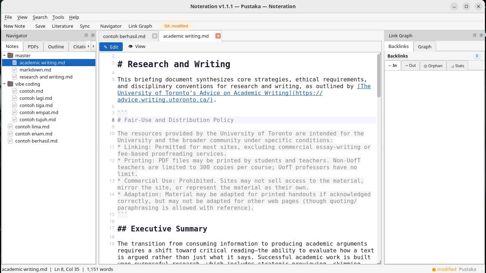
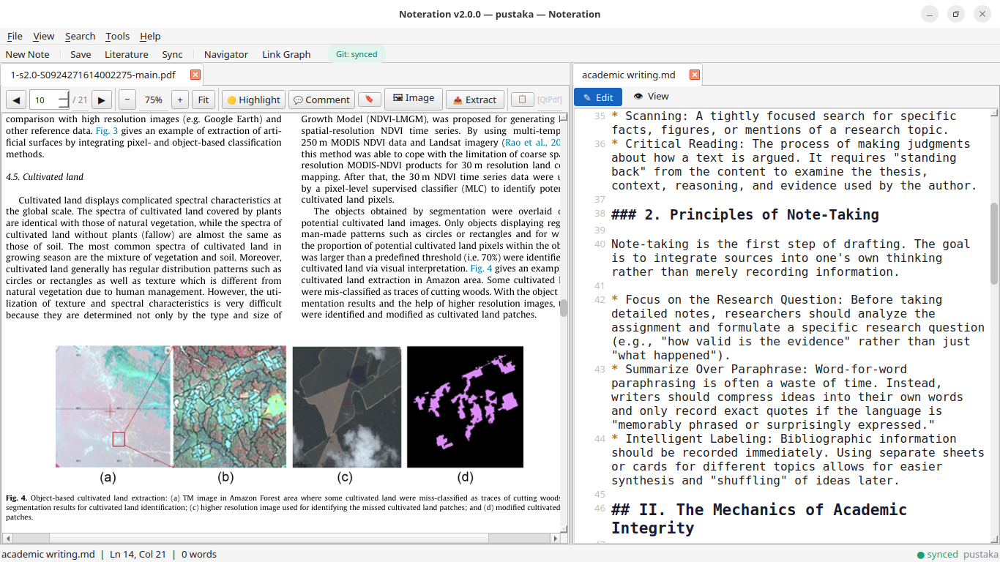
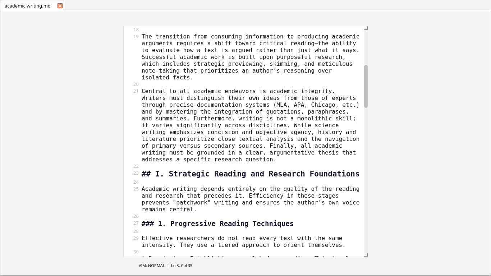
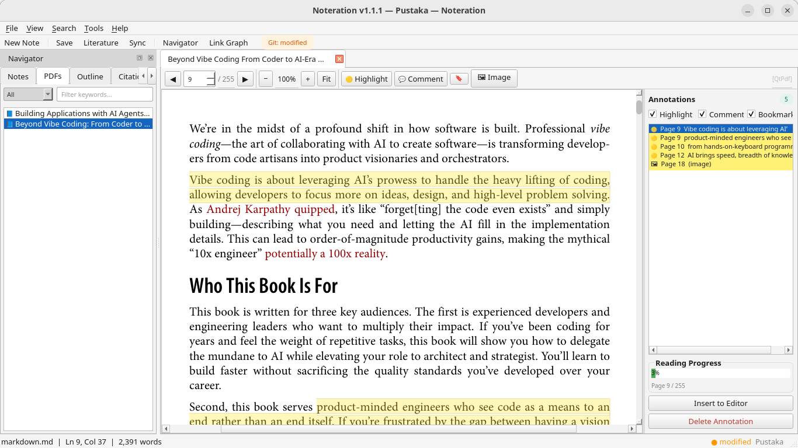
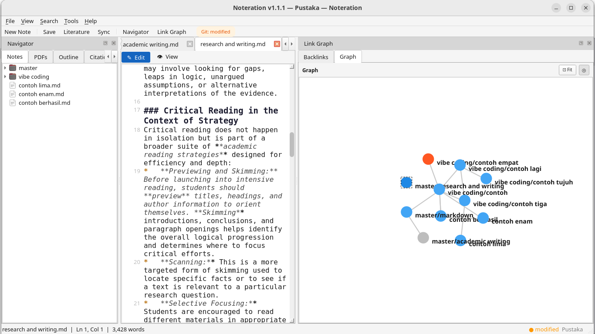
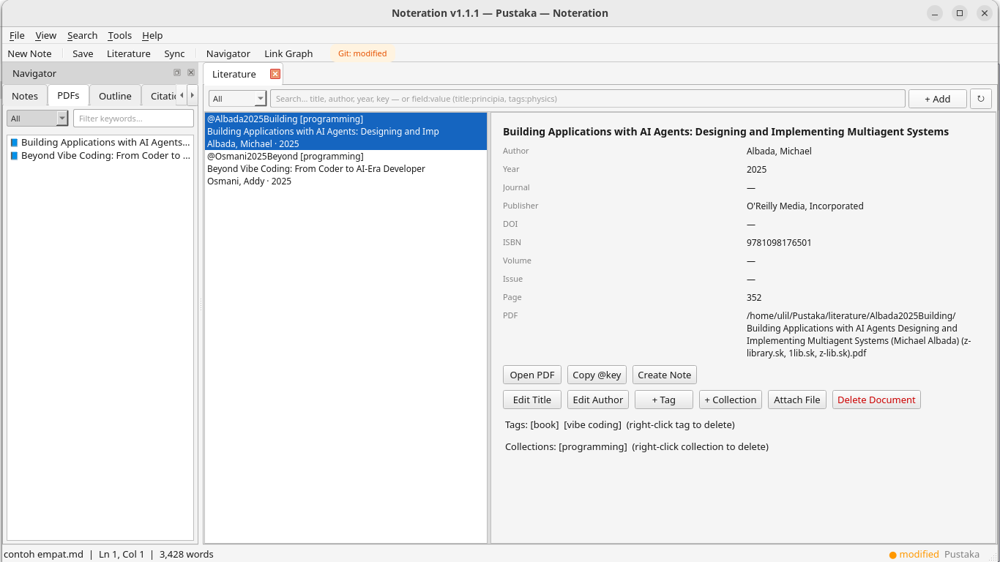
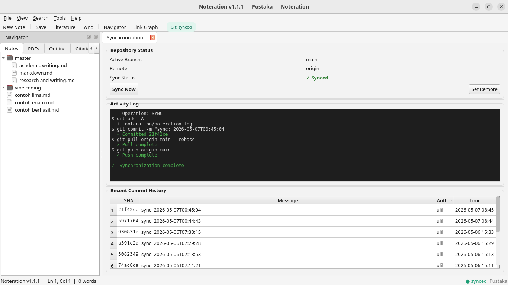

Noteration is a free, open-source desktop app for academic researchers. Write in Markdown, annotate PDFs, manage your literature library with Papis, explore your wiki-link graph, and sync everything to GitHub — all without switching apps.
Noteration was designed around a single principle: the academic research workflow should not be spread across five different apps. Markdown notes, PDF papers, citations, backlink graphs, and version control — integrated and always in sync.
A distraction-free Markdown editor with full syntax highlighting, line numbers, auto-indent, and support for LaTeX. Write naturally and switch to rendered view with one keypress.
Ctrl+Shift+VWork on two notes at once or read a PDF side-by-side with your research draft. Noteration 2.0 introduces vertical splitting to maximise your screen real estate and research productivity.
New in v2.0Connect notes with [[wiki-link]] syntax. Navigate with Ctrl+Click. An interactive force-directed graph visualises your entire knowledge network and highlights orphan notes.
Read research papers without leaving the app. Highlight text, add sticky notes, and capture image regions — all stored as non-destructive JSON annotations, synced to GitHub alongside your notes.
PyMuPDFBrowse your Papis reference library inside Noteration. Auto-fetch metadata from DOI. Export BibTeX per-note or choose from thousands of CSL citation styles (APA, IEEE, etc).
Papis + CSLHigh-performance SQLite FTS5 engine that covers all notes, literature metadata, and PDF annotations. Get instant results even in massive vaults with regex and case-sensitive support.
FTS5 EngineCommit, pull, and push your vault to any Git remote. Choose from three merge strategies — rebase, merge, or stash. A built-in three-panel conflict resolution dialog handles merge conflicts visually.
GitPythonA full theme engine with light, dark, and OS-adaptive modes. Theme changes apply live while you adjust settings — press Cancel at any time to instantly revert to the previous theme.
PySide6Press F11 for a fullscreen, distraction-free writing environment. All UI hides, the editor centres itself, and Vim keybindings activate so you never need to leave the keyboard.
Vim SupportEasily share your research in the format you need. Export Markdown notes directly to HTML, PDF, DOCX, ODT, LaTeX, or plain text with just a few clicks.
Pandoc PoweredOrganise your knowledge with a unified #tag system. Noteration synchronises tags between your Markdown notes and Papis literature metadata for a truly integrated workflow.
Academic-grade LaTeX support via Arithmatex. Render complex formulae directly in your preview.
New in v2.0At-rest encryption using the age format, natively integrated for seamless security. Secure your entire research vault with public-key cryptography and a seamless session decryption workflow. Encryption can be permanently disabled at any time through settings.
New in v2.0Manage your vault, search notes, fetch literature, and sync changes directly from your terminal with the ntr command. Perfect for automation and power users.
Expose your vault via a lightweight HTTP interface. Integrate Noteration with external tools like Obsidian, VS Code, or custom scripts using standard JSON endpoints.
New in v2.0Everything lives in a single, portable folder called a Vault. It is plain text, version-controlled, and fully readable without Noteration — your research data is always yours.
A Vault is a plain folder on your computer. Noteration adds .noteration/config.toml for settings, then you populate notes/, literature/, and attachments/ as you work.
Open any research paper in the built-in PDF viewer. Highlight key passages, add margin notes — none of it modifies the original PDF. All annotations are stored as portable JSON files.
In your Markdown note, type [[ to link another note, or @ to autocomplete a citation key from your Papis library. The backlink graph updates automatically.
One click - Noteration commits, pulls, and pushes. Your entire research vault is backed up and accessible on any device.
From the distraction-free Focus Mode with Vim keybindings to the interactive knowledge graph — every panel in Noteration is designed for deep, sustained research work. Click a tab to explore each feature.







Choose your platform. Each one-liner creates a virtual environment, installs all Python dependencies, and adds a desktop shortcut. Requires Python 3.11+ and Git.
Creates a .desktop entry in your applications menu. Requires Python 3.11+, Git, and python3-venv.
Creates Noteration.app in ~/Applications with a proper icon — visible in Launchpad.
Run in PowerShell. Creates a Desktop shortcut and a Start Menu entry. No admin rights required.
Noteration follows Keep a Changelog. Every release is tagged on GitHub with a full list of new features, changes, and fixes.
@key[p.10]) in Markdown editor.editor_tab.py.VaultCore (Pure Python), separating business rules from GUI.#tag support with automatic extraction and dedicated sidebar panel.age with a secure session workflow.RLock across all data engines to prevent race conditions.VaultManager into specialized controllers for better maintainability..gitignore enforcement.master) instead of using hardcoded defaults.Auto Sync is now disabled by default to improve performance and give users more control over network activity.:w (save), :q (exit Focus), and :wq (save and exit).install.sh for Linux and macOS (with .desktop entry and app icon), and install.ps1 for Windows PowerShell.Ctrl+N / Ctrl+S — keyboard shortcuts now work inside Focus Mode and all other contexts.noteration/docs/, making it easy to ship new in-app reference guides.[[note-name]] navigation with Ctrl+Click, alias syntax, and automatic new-note creation on broken links.